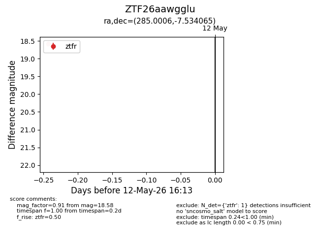
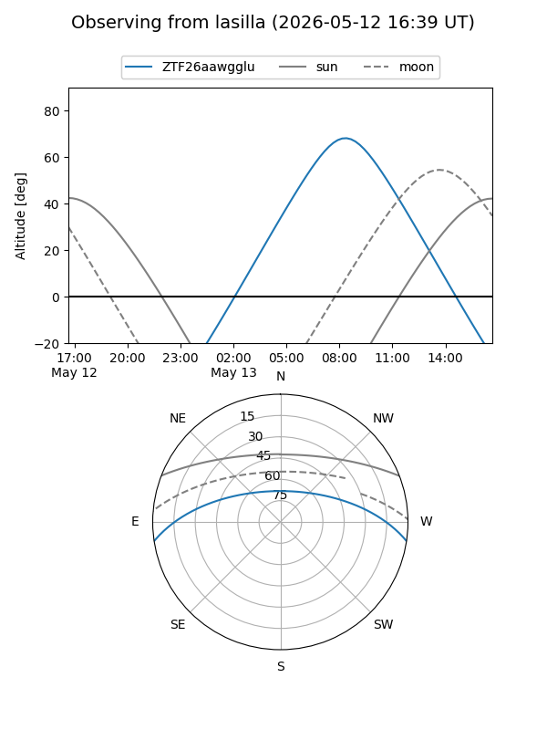
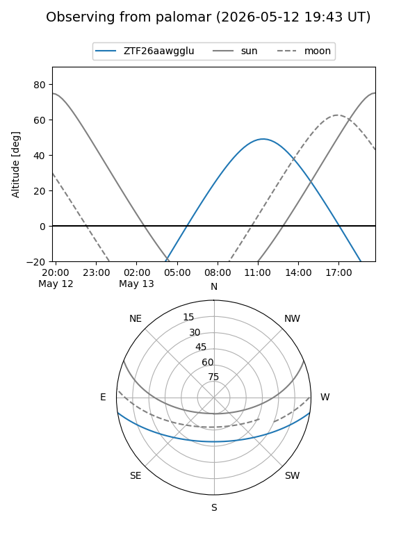

ZTF26aawgglu
Target ZTF26aawgglu at 2026-05-12 16:17
Aliases and brokers:
FINK: link
Lasair: link
ALeRCE: link
alt names
ZTF26aawgglu (ztf,fink_ztf)
Coordinates:
equatorial (ra, dec) = 285.0006,-7.53406
equatorial (HMS+DMS) = 19:00:00.14,-07:32:02.63
galactic (l, b) = (27.1792,-5.32184)
Flags:
Photometry:
last ztfr=18.58
1 ztfr detections
Lightcurve

Visibility


Additional plots